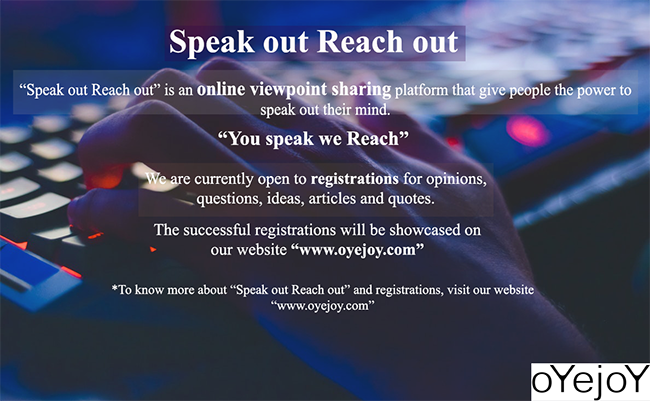
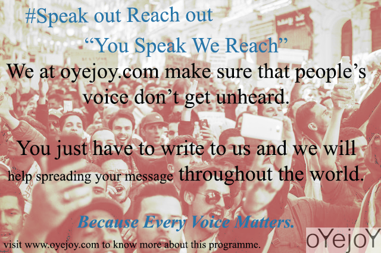

Speak Out Reach Out

Speak out Reach out is an online viewpoint sharing platform that give people the power to speak out their minds.
What we want people to do is simply give their opinions, ideas, questions, solutions, problems, grievances and
anything they feel is worth sharing and knowing.
“You speak We reach”
Why speak out reach out?
We feel every person some time or another feels the need to share or seek things and often find it hard to get the
appropriate platform where he can share or seek and that’s what we aspire to change and hence offer you the
platform where you can raise your opinions, issues, ideas, questions and solutions about anything that you feel is
worth sharing and knowing.
What’s so different about “speak out reach out” than other q/a platforms?
Speak out Reach out is not just another q/a platform but rather it strives to provide real time solutions to people’s
problems and empower people by helping them in escalating their issues, problems, opinions whether small or big
and give them the appropriate treatment and bring them to the attention they deserve. Not just that but we also offer
to give the appropriate royalty and recognition to the writer.
How does “speak out reach out work”?
You simply need to reach out to us by filling the form by clicking on the below link or through email -
Share With Us
Email - oyejoy.author@gmail.com

We are currently open to receive questions, opinions, articles, quotes, through mail and phone only but the responses
to which will be showcased on our website “www.oyejoy.com”.
We offer and respect both anonymity and recognition and hence it’s your choice whether to keep your identity anonymous or
public.
You can know about our Royalty(credit) program by contacting us.
There are no restrictions on topics and hence you can write to us on any topic you wish to spread.